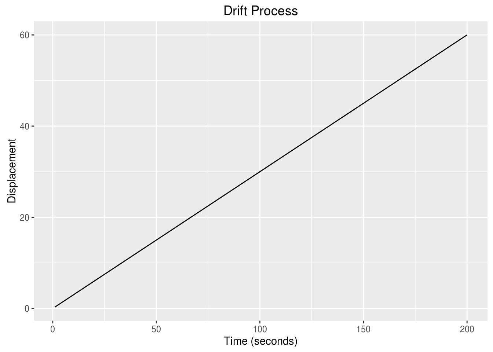
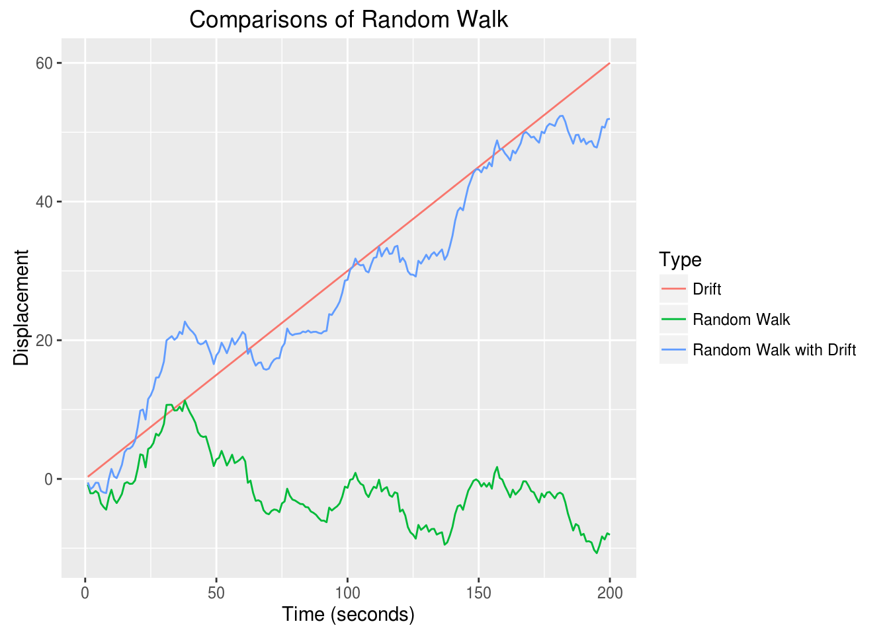

Chapter 4 Basic Models
4.1 The Backshift Operator
Definition: Backshift Operator
The Backshift Operator is helpful when manipulating time series. When we backshift, we are changing the indices of the time series. e.g. \(t \rightarrow t-1\). The operator is defined as:
\[B{x_t} = {x_{t - 1}}\]
If we were to repeatedly apply the backshift operator, we would receive:
\[\begin{aligned} {B^2}{x_t} &= B\left( {B{x_t}} \right) \\ &= B\left( {{x_{t - 1}}} \right) \\ &= {x_{t - 2}} \\ \end{aligned}\]
We can generalize this behavior as: \[{B^k}{x_t} = {x_{t - k}}\]
The backshift operator is helpful for later decompositions in addition to making differencing operations more straightforward.
4.2 White Noise
The process name of white noise has meaning in the notion of colors of noise. Specifically, the white noise is a process that mirrors white light’s flat frequency spectrum. So, the process has equal frequencies in any interval of time.
Definition: White Noise
\(w_t\) or \(\varepsilon _t\) is a white noise process if \(w_t\) are uncorrelated identically distributed random variables with \(E\left[w_t\right] = 0\) and \(Var\left[w_t\right] = \sigma ^2\), for all \(t\). We can represent this algebraically as: \[y_t = w_t,\] where \({w_t}\mathop \sim \limits^{id} WN\left( {0,\sigma _w^2} \right)\)
Now, if the \(w_t\) are Normally (Gaussian) distributed, then the process is known as a Gaussian White Noise e.g. \({w_t}\mathop \sim \limits^{iid} N\left( {0,{\sigma ^2}} \right)\)
To generate gaussian white noise use:
set.seed(1336) # Set seed to reproduce the results
n = 200 # Number of observations to generate
wn = ts(rnorm(n,0,1)) # Generate Guassian white noise.
autoplot(wn) +
ggtitle("White Noise Process") +
ylab("Displacement") + xlab("Time (seconds)")
4.3 Moving Average Process of Order q = 1 a.k.a MA(1)
Definition: Moving Average Process of Order (q = 1)
The concept of a Moving Average Process of Order q is a way to remove “noise” and emphasize the signal. The moving average achieves this by taking the local averages of the data to produce a new smoother time series series. The newly created time series is more descriptive, but it does influence the dependence within the time series.
This process is generally denoted as MA(1) and is defined as:
\[{y_t} = {\theta _1}{w_{t - 1}} + {w_t},\]
where \({w_t}\mathop \sim \limits^{iid} WN\left( {0,\sigma _w^2} \right)\)
set.seed(1345) # Set seed to reproduce the results
n = 200 # Number of observations to generate
sigma2 = 2 # Controls variance of Guassian white noise.
theta = 0.3 # Handles the theta component of MA(1)
# Generate a white noise
wn = rnorm(n+1, sd = sqrt(sigma2))
# Simulate the MA(1) process
ma = rep(0, n+1)
for(i in 2:(n+1)) {
ma[i] = theta*wn[i-1] + wn[i]
}
ma = ts(ma[2:(n+1)]) # Remove first item
autoplot(ma) +
ggtitle("Moving Average Order 1 Process") +
ylab("Displacement") + xlab("Time (seconds)")
4.4 Drift
Definition: Drift
A drift process has two components: time and a slope. As more points are accumlated over time, the drift will match the common slope form.
Specifically, the drift process has the following form: \[y_t = y_{t-1} + \delta \] with the initial condition \(y_0 = c\).
The process can be simplified using backsubstitution to being: \[\begin{aligned} {y_t} &= {y_{t - 1}} + \delta \\ &= \left( {{y_{t - 2}} + \delta} \right) + \delta \\ &\vdots \\ &= \sum\limits_{i = 1}^t {\delta} + y_0 \\ {y_t} &= t{\delta} + c \\ \end{aligned} \]
Again, note that a drift is similar to the slope-intercept form a linear line. e.g. \(y = mx + b\).
To generate a drift use:
n = 200 # Number of observations to generate
drift = .3 # Drift Control
dr = ts(drift*(1:n)) # Generate drift sequence (e.g. y = drift*x + 0)
autoplot(dr) +
ggtitle("Drift Process") +
ylab("Displacement") + xlab("Time (seconds)")
4.5 Random Walk
In 1906, Karl Pearson coined the term ‘random walk’ and demonstrated that “the most likely place to find a drunken walker is somewhere near his starting point.” Empirical evidence of this phenomenon is not too hard to find on a Friday night in Champaign.
Definition: Random Walk
A random walk is defined as a process where the current value of a variable is composed of the past value plus an error term that is a white noise. In algebraic form, \[y_t = y_{t-1} + w_t\] with the initial condition \(y_0 = c\).
The process can be simplified using backsubstitution to being: \[\begin{aligned} {y_t} &= {y_{t - 1}} + {w_t} \\ &= \left( {{y_{t - 2}} + {w_{t - 1}}} \right) + {w_t} \\ &\vdots \\ {y_t} &= \sum\limits_{i = 1}^t {{w_i}} + y_0 = \sum\limits_{i = 1}^t {{w_i}} + c \\ \end{aligned} \]
To generate a random walk, we use:
set.seed(1336) # Set seed to reproduce the results
n = 200 # Number of observations to generate
w = rnorm(n,0,1) # Generate Guassian white noise.
rw = ts(cumsum(w)) # Cumulative sum
# Create a data.frame to graph in ggplot2
autoplot(rw) +
ggtitle("Random Walk") +
ylab("Displacement") + xlab("Time (seconds)")
4.6 Random Walk with Drift
In the previous case of a random walk, we assumed that drift, \(\delta\), was equal to 0. What happens to the random walk if the drift is not equal to zero? That is, what happens with the initial condition \(y_0 = c\)?
\[\begin{aligned} {y_t} &= {y_{t - 1}} + {w_t} + \delta \\ &= \left( {{y_{t - 2}} + {w_{t - 1}} + \delta} \right) + {w_t} + \delta \\ &\vdots \\ {y_t} &= \sum\limits_{i = 1}^t {\left({w_{i} + \delta}\right)} + y_0 = \sum\limits_{i = 1}^t {{w_i}} + t\delta + c \\ \end{aligned} \]
To generate a random walk with drift we use:
set.seed(1336) # Set seed to reproduce the results
n = 200 # Number of observations to generate
drift = .3 # Drift Control
w = rnorm(n,0,1) # Generate Guassian white noise.
wd = w + drift # Add a drift
rwd = ts(cumsum(wd)) # Cumulative sum
# Create a data.frame to graph in ggplot2
autoplot(rwd) +
ggtitle("Random Walk with Drift") +
ylab("Displacement") + xlab("Time (seconds)")
Notice the difference the drift makes upon the random walk:
# Add identifiers
drift.df = data.frame(Index = 1:n, Data = drift*(1:n), Type = "Drift")
rw.df = data.frame(Index = 1:n, Data = rw, Type = "Random Walk")
rwd.df = data.frame(Index = 1:n, Data = rwd, Type = "Random Walk with Drift")
combined.df = rbind(drift.df, rw.df, rwd.df)
ggplot(data = combined.df, aes(x = Index, y = Data, colour = Type)) +
geom_line() +
ggtitle("Comparisons of Random Walk") +
ylab("Displacement") + xlab("Time (seconds)")
4.7 Autoregressive Process of Order p = 1 a.k.a AR(1)
Definition: Autoregressive Process of Order p = 1
This process is generally denoted as AR(1) and is defined as: \({y_t} = {\phi _1}{y_{t - 1}} + {w_t},\)
where \({w_t}\mathop \sim \limits^{iid} WN\left( {0,\sigma _w^2} \right)\)
If \(\phi _1 = 1\), then the process is equivalent to a random walk.
The process can be simplified using backsubstitution to being: \[\begin{aligned} {y_t} &= {\phi _t}{y_{t - 1}} + {w_t} \\ &= {\phi _1}\left( {{\phi _1}{y_{t - 2}} + {w_{t - 1}}} \right) + {w_t} \\ &= \phi _1^2{y_{t - 2}} + {\phi _1}{w_{t - 1}} + {w_t} \\ &\vdots \\ &= {\phi ^t}{y_0} + \sum\limits_{i = 0}^{t - 1} {\phi _1^i{w_{t - i}}} \end{aligned}\]
set.seed(1345) # Set seed to reproduce the results
n = 200 # Number of observations to generate
sigma2 = 2 # Controls variance of Guassian white noise.
phi = 0.3 # Handles the phi component of AR(1)
wn = rnorm(n+1, sd = sqrt(sigma2))
# Simulate the MA(1) process
ar = rep(0,n+1)
for(i in 2:n) {
ar[i] = phi*ar[i-1] + wn[i]
}
ar = ts(ar[2:(n+1)])
autoplot(ar) +
ggtitle("Autoregressive Order 1 Process") +
ylab("Displacement") + xlab("Time (seconds)")